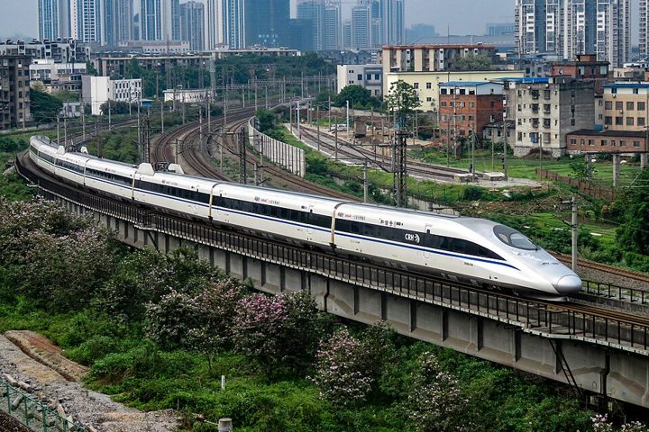
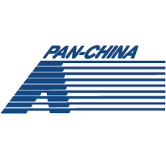

Hi there! I'm Xuyang Wang 👋 I am a master's student in Data Science at
Lehigh University, with a background in
machine learning and data analytics. Before Lehigh, I received my B.Eng. in Data Science and Big Data Technology
from Lanzhou Jiaotong University.
My work spans the full data lifecycle: building data pipelines, running statistical analysis, training and
evaluating machine-learning models, and turning results into dashboards and reports that support decisions.
I have applied these skills across three internships in audit analytics, quantitative research and consulting.
Graduating in December 2026 and open to
Data Scientist, Machine Learning Engineer, Data Analyst and
Business Analyst opportunities.
Jun 2025 – Dec 2026 (expected)Bethlehem, PA, USAAccelerated Computing for ML · Deep & Generative Learning · Data Mining · Statistical & Machine Learning · Statistical Modeling · Algorithms & Software Foundations · Vibe Research for Scientific Discovery
LLM Agent · Natural-language analytics over Olist e-commerce data
Agent architecture & skill orchestration: Designed and built a natural-language analytics agent that turns business questions into validated insights, orchestrating nine skills for planning, schema discovery, guarded SQL generation, validation, visualization and synthesis, and delivering interactive Streamlit/Plotly reports over the Olist e-commerce dataset.
Evidence-gated validation: Encoded 31 source-data rules and policies together with query-level reconciliation and coverage checks; implemented a Candidate–Validate–Commit workflow that blocks any result with failed or missing required evidence, so unverified numbers never reach the final report.
Persistent conversation memory: Combined SQLite conversation history with retrieval of previously validated analyses and query-filter inheritance; in a live API test the agent retained region and order-status filters across eight preseeded intervening turns.
Fault tolerance & cost control: Implemented journaling and checkpointing for long-running analyses; on a 10,000-order sample, independently reconciled order and GMV totals against the CSV source and verified that resuming five committed tasks required no new API calls.
Lehigh University · Feb 2026 – May 2026 · Co-Developer
Co-developed an image stylization system on Stable Diffusion img2img with PyTorch and Hugging Face Diffusers, covering the full workflow from image upload and text prompting to generation-strength control.
Designed a quantitative evaluation comparing diffusion outputs against a CNN-based style-transfer baseline, using SSIM for structural similarity and CLIP Score for semantic alignment to measure the trade-off between content preservation and style strength.
Built Gradio and Streamlit front ends that expose model parameters to non-technical users and present inputs, generated outputs and parameter trade-offs side by side.
PyTorchHugging Face DiffusersStable DiffusionGenerative AICLIPSSIMGradioStreamlit
Lehigh
Global Air Quality Analysis and AQI Classification Prediction
Lehigh University · Feb 2026 – May 2026 · Co-Developer
Built an end-to-end Python data pipeline for a global air-quality dataset, covering missing-value treatment, deduplication, AQI category labeling and pollutant feature preparation.
Performed exploratory data analysis and statistical testing on AQI distributions, country-level differences and relationships between pollutants to identify the main drivers of air quality.
Trained a Random Forest classifier to predict AQI categories and deployed it in an interactive Streamlit dashboard for prediction and result exploration.
Comparative Statistical Analysis of Climate Differences Across Global Capitals
Lehigh University · Sep 2025 – Dec 2025
Led project planning and coordinated the integration of team analyses for a cross-continental study of global-capital weather data covering June 2024 through May 2025.
Engineered city-month analytical records for six core weather indicators and delivered trend, boxplot and correlation visualizations to communicate regional patterns.
Applied one-way ANOVA, Kruskal-Wallis, Welch pairwise comparisons and Levene/Shapiro assumption checks; found a correlation of r = −0.64 between temperature and pressure and showed that continental grouping explains 26.6% of temperature variation.
Bitcoin Price Analysis and Prediction Based on LSTM
Lanzhou Jiaotong University · Feb 2025 – Jun 2025 · Independent Researcher
Built a Python data workflow for 3,413 daily BTC-USD records using forward filling, MinMax scaling and 60-day input sequences for time-series forecasting.
Engineered return, rolling-volatility and volume features; segmented the market into four states using PCA and K-Means clustering.
Detected anomalous price and volume behavior with three complementary methods: Z-score, IQR and Isolation Forest.
Tuned a Keras LSTM with Keras Tuner, reducing test RMSE by 28.5% (from 1,904.98 to 1,361.78).
Integrated forecasts, anomaly flags and market states into an interactive Plotly prototype with rule-based risk alerts to support market monitoring.
Intelligent Real-Time Traffic Monitoring and Analysis System for Road Checkpoints
Lanzhou Jiaotong University · Sep 2024 – Oct 2024
Developed analytics modules for vehicle trajectory analysis, collision analysis, congestion detection and regional traffic-flow statistics on road-checkpoint data.
Implemented real-time congestion monitoring with Spark Streaming using a 5-minute window and a 5-second sliding interval.
Computed the Top 3 road traffic flows by region and conversion rates for 5 designated checkpoints to support traffic management decisions.
SparkSpark StreamingReal-Time AnalyticsBig Data
LZJTU

Intelligent Evaluation System for High-Speed Rail Train Control Equipment
Lanzhou Jiaotong University · Jun 2024 – Jul 2024
Contributed to a big-data platform that analyzes train alarm and operations data and produces offline and real-time reports to improve railway operating efficiency and safety.
Built parts of the train master-data collection and transmission pipeline: a Java service receives data from ZeroMQ, parses Protobuf messages and delivers them to Kafka, processing 32,057 messages for downstream analytics.
Set up and configured Hadoop, Zookeeper, Flume, Kafka and Spark components; used Flume to land Kafka data in HDFS for durable storage.
Cleaned and transformed offline data with Spark Core, produced report aggregations with Spark SQL and stored the results in MySQL.
Wrote Python scripts to read report data from MySQL and visualize it with ECharts.
Lanzhou Jiaotong University · Jan 2023 – Apr 2023 · Independent Researcher
Preprocessed Amazon Sports & Outdoors ratings into user-item interactions, retaining users with at least five ratings to reduce sparsity.
Trained a 100-factor SVD collaborative-filtering model with Surprise and applied PCA to reduce the user-item latent representations.
Generated Top-5 personalized recommendations from similarity scores in the reduced feature space.
Evaluated alternative SVD/PCA configurations using RMSE on held-out test data.
Pythonscikit-surpriseSVDCollaborative FilteringPCARecommender Systems
Experience
IT Audit Intern
Pan-China Certified Public Accountants LLP
Hangzhou, ChinaJul – Aug 2026
Reconciled e-commerce order and logistics data across systems to identify discrepancies between order-management-system (OMS) records and shipment records.
Analyzed order exceptions, classified their causes and flagged transactions that required client clarification or audit follow-up.
Cleaned audit data, updated analysis scripts and performed sample testing across three e-commerce platforms.
Data ReconciliationData CleaningException AnalysisAudit Analytics

Quantitative Research Intern
QY (Qianyuan) Capital Co., Ltd.
Shenzhen, ChinaJan – Mar 2024
Processed 12 months of financial data for factor screening and evaluated 15 candidate factors, selecting 5 for strategy review.
Applied a genetic algorithm over 3 iterations to prioritize factor combinations and streamline the screening analysis.
Conducted factor-attribution analysis to quantify return and risk drivers, supporting portfolio-optimization and risk-control discussions with the research team.
Factor AnalysisFinancial Data MiningGenetic AlgorithmAttribution Analysis
QY
Consulting Assistant Intern (Data)
Capgemini Consulting (China) Co., Ltd.
Shanghai, ChinaJul – Aug 2023
Worked in the data group of a public-opinion (sentiment) monitoring project for new-energy vehicles; collected 40% of the review dataset across 12 websites, adapting Python crawlers to 7 page-structure types.
Integrated and refactored the team's crawler code, fixing errors and improving code structure ahead of packaging.
Maintained MongoDB collections and 2 data-transfer interfaces, supporting the pipeline from ingestion and storage to NLP-ready data.
Encoded three-class sentiment labels and aligned data schemas with the algorithm team for downstream model training.
Assisted the algorithm and solution teams with data analysis and Power BI visualization, and reported project progress to the mentor and other workstreams.
PythonWeb ScrapingMongoDBMySQLETLNLP Data PreparationPower BI